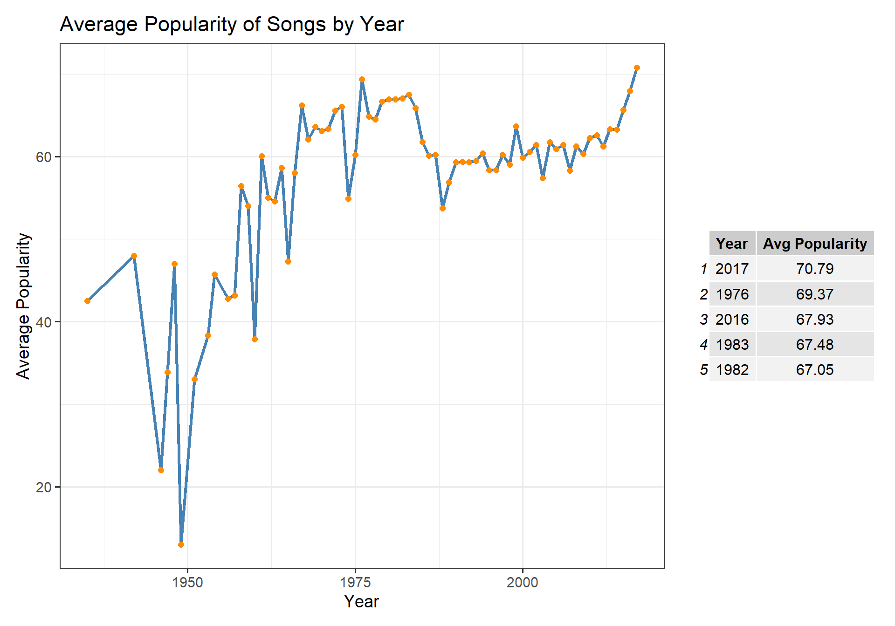

In this mini-project, we dive into the world of music analytics to craft The Ultimate Playlist. Using real Spotify data, we analyze both song popularity and audio features to uncover the key elements that make a song stand out. By exploring patterns in user behavior and musical traits, we aim to build a playlist that captures the essence of what listeners love most. Inspired by the legendary “All Rise” playlist, this project challenges you to define your own version of musical perfection.
Data Acquisition
Song Characteristics
Show the code
library(stringr)library(dplyr)library(knitr)library(scales)library(ggplot2)library(gridExtra)load_songs <-function() {library(readr)library(here)# Define the directory and file path dir_path <-here("data", "mp03") file_name <-"songs.csv" file_path <-file.path(dir_path, file_name) # Create directory if it doesn't existif (!dir.exists(dir_path)) {dir.create(dir_path, recursive =TRUE) }# Download file only if it doesn't existif (!file.exists(file_path)) { url <-"https://raw.githubusercontent.com/gabminamedez/spotify-data/refs/heads/master/data.csv"download.file(url, destfile = file_path, method ="auto") }library(readr) songs_df <-read_csv(file_path, show_col_types =FALSE)# Optional: clean column names if necessary# library(janitor)# songs_df <- clean_names(songs_df)return(songs_df)}songs_df <-load_songs()
This dataset contains audio features and metadata for a wide range of tracks. It includes details such as song name, artist(s), album, release year, and attributes like danceability, energy, and popularity. The data was downloaded from a GitHub mirror and required some cleaning—especially the artists column, which lists multiple artists in a non-standard format. The cleaned dataset was transformed into a tidy structure, with each row representing one song-artist combination.
This dataset is a large collection of Spotify user-generated playlists, provided as multiple JSON files. A custom function was written to responsibly download and parse the files only if not already available locally. Since the raw structure is nested and complex, the data was reshaped into a flat, rectangular format. Each row represents a single track within a playlist, including attributes like playlist name, track name, artist, album, and position within the playlist.
The table shows the 5 most popular songs, and how many time they appeared in different playlists.
What is the most popular track in the playlist data that does not have a corresponding entry in the song characteristics data?
Show the code
songs_df<- songs_df|>rename("track_id"= id)# joining the 2 datasets by the track ID joined_data <- songs_df|>left_join(rectangular_tracks_df, by ="track_id")count_of_NA <- joined_data|>summarize(na_count =sum(is.na(playlist_name)))#for(i in 1:5) {# if most_pop_tracks$track_id[]#}
According to the song characteristics data, what is the most “danceable” track? How often does it appear in a playlist?
Show the code
#get the most danceable songmost_danceable<- joined_data|>group_by(name)|>arrange(desc(danceability))|>head(5)# counting number of appearencesdance_count<- rectangular_tracks_df|>filter(track_id == most_danceable$track_id[1])|>summarize(appereances =n())
The most danceable track in the dataset is Funky Cold Medina by Tone-Loc, which appears 1 time in the “VACATION”
Which playlist has the longest average track length?
Show the code
rectangular_tracks_df <- rectangular_tracks_df|>group_by(playlist_name)|>mutate(avg_duration =mean(duration))|>ungroup()|>mutate(avg_duration = avg_duration /1000, # converting ms to secondsavg_duration_min = avg_duration /60) long_avg <- rectangular_tracks_df|>slice_max(avg_duration)
“classical” is the playlist with longest average track lenght, with an average duration of 411 seconds , or about 7 minutes for each song.
The most popular playlist on Spotify is Tangled with 1038 followers.
Identifying Characteristics of Popular Songs
Combining the Datasets
To analyze both song characteristics and playlist behavior, we use an inner_join to merge the playlist and song datasets based on track IDs.
This approach ensures that only songs appearing in both datasets are included in our analysis. Although this results in the loss of some playlist data (since not every track has corresponding song characteristics), it allows for a cleaner dataset with complete information. Given the differences in timing and structure between the two data exports, this is the most practical solution.
Show the code
# joining the 2 datasets by the track ID using inner_joininner_joined_data <- songs_df|>inner_join(rectangular_tracks_df, by ="track_id")
Is the popularity column correlated with the number of playlist appearances? If so, to what degree?
Show the code
# counting playilist appearances in the inner_jointed datasetinner_joined_data <- inner_joined_data|>group_by(track_id)|>mutate( playlist_appereance =n())|>ungroup()# getting the first occurence of each songpopular_songs <-inner_joined_data|>group_by(track_id)|>slice(1)|>arrange(desc(popularity))
The table below show the Top 5 most popular songs using Popularity Index
Song
Artist
Album Name
Popularity Index
# of Playlist Appearence
goosebumps
Travis Scott
Birds In The Trap Sing McKnight
92
35
Play Date
Melanie Martinez
Cry Baby
91
1
Jocelyn Flores
XXXTENTACION
17
87
11
Perfect
Ed Sheeran
÷
86
7
Shape of You
Ed Sheeran
÷
85
30
The table below show the Top 5 most popular songs by Playlist Appereances
The scatterplot shows a wide dispersion of points without a clear linear pattern, indicating a weak or no strong correlation between the popularity index and the number of playlist appearances. While a few popular songs do appear frequently in playlists, many others have high popularity but low appearances, or vice versa. This suggests that playlist frequency alone doesn’t strongly predict popularity.
Show the code
correlation <-cor(popular_songs$popularity, popular_songs$playlist_appereance, use ="complete.obs")
Upon further investigation, we found that the correlation between the 2 variable is 0.38, which indicates weak correlation, and validates our original thesis.
In what year were the most popular songs released?
The graph illustrates the average popularity of songs over time, showing a general upward trend—suggesting that songs from more recent years tend to be more popular.
Next to the graph, the table displays the Top 5 Most Popular Year in which songs were released.
In what year did danceability peak?
Show the code
# calculating average of dancebility for each yeardanceability <- inner_joined_data|>group_by(year)|>mutate(avg_danceability =mean(danceability))|>arrange(desc(avg_danceability))
In 2017 we see the higher danceability score, with an index of 0.71.
Show the code
danceability|>ggplot(aes(x = year , y = avg_danceability)) +geom_point(color ="darkorange", size =3) +labs(title ="Linear Trend of Danceability Over Time",x ="Year",y ="Average Danceability" ) +theme_bw() +theme(axis.title.x =element_text(margin =margin(t =15)),axis.title.y =element_text(margin =margin(r =15)),axis.text =element_text(size =12),axis.title =element_text(size =16),plot.title =element_text(size =20, face ="bold") ) +geom_smooth(method ="lm", se =FALSE, color ="black")+scale_x_continuous(breaks =seq(min(danceability$year), max(danceability$year), by =10))

Show the code
ggsave("danceability_plot.png")
This plot visualizes the distribution of danceability of tracks across the years. Danceability measures how suitable a track is for dancing, and values range from 0 to 1. Higher values indicate that the track is more suitable for dancing. This plot illustrates an upward trend in danceability over the years, suggesting that more recent tracks tend to be increasingly suited for dancing.
Which decade is most represented on user playlists?
To find the most represented decades in the playlists, we group the playlist data by decade and count how many times songs from each decade appear.
Show the code
# grouping by decadesinner_joined_data<- inner_joined_data|>mutate(decade =paste0((year %/%10) *10, "s"))library(scales)# sum of appereances in playlist by decaderepr_decades<- inner_joined_data|>group_by(decade)|>summarize(total_appearances =sum(playlist_appereance, na.rm =TRUE)) |>arrange(desc(total_appearances))|>mutate(total_appearances =number(total_appearances, big.mark =","))
Decade
Total Appearances in Playlists
2010s
469,475
2000s
54,649
1990s
19,889
1980s
11,031
1970s
9,041
1960s
3,733
1940s
500
1950s
223
1930s
2
🎵 Graph Description – Frequency of Musical Keys (Polar Plot):
This polar plot illustrates the frequency of musical keys, represented as numbers from 0 to 11, where each number corresponds to a musical key (e.g., 0 = C, 1 = C♯/D♭, 2 = D, etc.). The circular layout reflects the cyclical nature of musical keys, akin to the Circle of Fifths in music theory.
Each bar’s height indicates how often that key appears among the songs in user playlists. This visualization helps identify which keys are most common, offering insights into musical trends and preferences. Despite using numeric values, the cyclical arrangement of keys remains intuitive in this format.
Show the code
# Calculate the frequency of each keykey_frequency <- inner_joined_data |>group_by(key) |>summarize(count =n()) |>arrange(desc(count))# Create a polar plotggplot(key_frequency, aes(x =as.factor(key), y = count)) +geom_bar(stat ="identity", fill ="skyblue", color ="black") +coord_polar(start =0) +theme_bw() +labs(title ="Frequency of Musical Keys Among Songs",x ="Musical Key",y ="Frequency") +theme(axis.text.x =element_text(angle =45, hjust =1),axis.text =element_text(size =12),axis.title =element_text(size =16),plot.title =element_text(size =20, face ="bold"))
Track Duration Stats
Show the code
#convert duration in minutes inner_joined_data <- inner_joined_data |>mutate(duration_min = duration_ms /60000)# calculating mean and percentiles to see avg track lengthlength_info <- inner_joined_data |>summarize( avg_length =mean(duration_min),median_length =median(duration_min),shortest =min(duration_min),longest =max(duration_min),p25 =quantile(duration_min, 0.25),p75 =quantile(duration_min, 0.75) )length_info$avg_length <-round(length_info$avg_length, 2)length_info$median_length <-round(length_info$median_length, 2)length_info$shortest <-round(length_info$shortest, 2)length_info$longest <-round(length_info$longest, 2)length_info$p25 <-round(length_info$p25, 2)length_info$p75 <-round(length_info$p75, 2)
The table below summarizes key statistics about the distribution of track lengths (in minutes) among the songs included in user playlists. It includes the average and median track length, as well as the shortest and longest tracks in the dataset. Additionally, the table shows the 25th percentile and 75th percentile values, which define the interquartile range (IQR) — the range that contains the middle 50% of all track lengths.
We can see from the table that most tracks tend to be the range 3.4 and 4.4 minutes, suggesting a preference for mid-length songs.
Average
Median
Shortest
Longest
25 Percentile
75 Percentile
3.97
3.83
0.64
37.31
3.4
4.4
Show the code
ggplot(inner_joined_data, aes(x = duration_min)) +geom_histogram(binwidth =0.5, fill ="darkorange", color ="white") +labs(title ="Distribution of Track Lengths in User Playlists",x ="Track Length (minutes)",y ="Number of Songs" ) +theme_bw()+theme(axis.text =element_text(size =12),axis.title =element_text(size =16),plot.title =element_text(size =20, face ="bold"))+scale_x_continuous(limits =c(0, 10, 2))